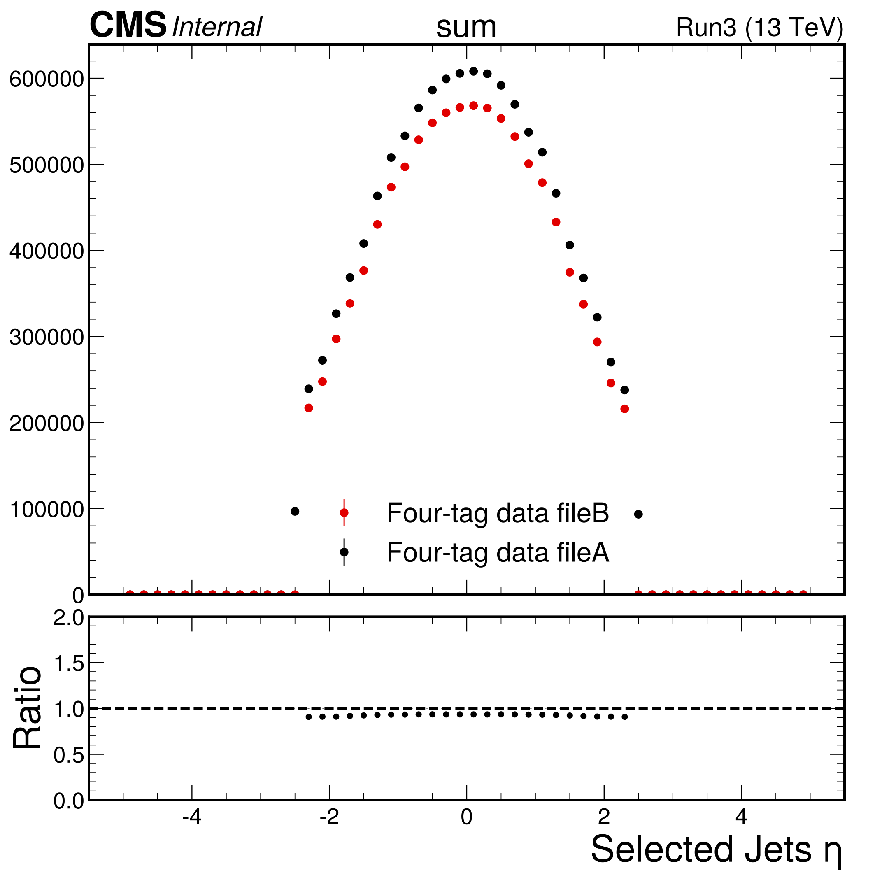

Run3 Synthetic Data
To Do
- New cluster splitting templates
Feedback from Marina:
[ ]add the TrigObj collection- Move pt cut to 35
[ ]Jets with 3 medium b-jets[ ]How to get dressed bs in output files ?[ ]How to properly boost with the mass ?
2025_v1: with new pdf 00-10-00
2025_v1
- Like v9 but Using new Skims
v9:
- like v8 but now with the 00-09-02 pdfs (using the rotated masses for the ak4 jets pdfs)
v8:
- like v7 but with 00-09-01 pdfs (using new jet calibration)
v7:
- like v6 but only apply the b-reg corrections once
v6:
- like v5 but now rho correction when declustering.
v5:
- like v4, but with splitting functions that use the JEC calbiration
v4:
- like v3 but with new JEC calibration and btag filter at 30 GeV
v3
- new skims (btag filter at 40 GeV)
v1
- 202*v1
- Problems: no TTbar subtraction / wrong btagging / wrong breg Corrections
Daily Logs
26 February 2026 Thursday
- Looks like norm different b/c eta selection

25 February 2026 Wednesday
- Confirmed that the ttbar PSData is being filled in the DeClustered data
- Running clustering without tt subtraction… finished
24 February 2026 Tuesday
- Got the new clustered data… looks reasonable
Making splitting pdfs
./run_container python coffea4bees/jet_clustering/make_jet_splitting_PDFs.py output/synthetic_dataset_cluster_Run3/synthetic_datasets_Run3_ttSub.coffea --years Run3 --out coffea4bees/jet_clustering/jet-splitting-PDFs-00-11-00
- Implement ttbar subtraction with FvT in
make_declustered_data_4b.py - Setting up make dataset scripts
- Making the synthetic dataset
./run_container source coffea4bees/scripts/synthetic-dataset-make-dataset-Run3-all.sh Fails with
ERROR The whole dataset is missing: {'data_2023_preBPixF', 'data_2022_preEED', 'data_2023_preBPixE', 'data_2022_EEG', 'data_2023_preBPixA', 'data_2023_preBPixB', picoaod.py:288 'data_2022_preEEC', 'data_2023_preBPixD', 'data_2023_BPixD', 'data_2023_BPixE', 'data_2022_preEEB', 'data_2022_EEE', 'data_2023_preBPixC', 'data_2022_EEF'} Traceback (most recent call last): File "/srv/runner.py", line 1121, in <module> run_job(fileset, configs, config_runner, executor, executor_args, args, client, tstart) File "/srv/runner.py", line 191, in wrapper result = func(*args, **kwargs) File "/srv/runner.py", line 761, in run_job output = process_skimming_output(output, fileset, configs, config_runner, args, client) File "/srv/runner.py", line 626, in process_skimming_output output, complete = integrity_check(fileset, output) File "/srv/src/skimmer/picoaod.py", line 329, in integrity_check output[dataset].pop("source")- Testing locally … b/c of the missing skip collections and
skip_collectionsandskip_branches…! - Rerunning… finished
- Made datasets …
- Analyze resutls … see less data than before …
- Why less data than before ???
[X]Am I missing the ttbar ? … no … at least ttbar only looks good
- Running with SvB
580350 (Declustered) vs (new) 592279.0 and (old) 668447.0
- Decluster with current code with out ttbar subtraction ?
23 February 2026 Monday
[X]Make cluster splittings with ttbar subtraction[X]ttbar subtraction when DeClustering- Setting up Run3 clustering …
- Mote to subtracting TTbar with FvT weights in processcluster4b.py
./run_container source coffea4bees/scripts/synthetic-dataset-cluster-Run3.sh- Make clustering pdfs
[X]Compare to w/TT PDFs- Was still running with test=True
30 May 2025 Friday
- Looking into merging "by Hand"
- On cmslpc323
- making
merge_synthetic_data_by_hand.py - Debugging… Got it working!
- Datasets
data_2022_EEEanddata_2022_EEFwere merged with the wrong chunksize - I think I know what Im doing… Aborting this mission and now trying the other option… Specify campaign
- Re:submitted on cmslpc323
- Think it ran… Runing the analyzer
- Port forwarding with
ssh -XY -L 10200:localhost:10200 cmslpc323
29 May 2025 Thursday
- Lowering the jet pt threshold for pdf making to 20 GeV
- Running clustering on cmslpc346
python runner.py -o synthetic_datasets_Run3_2025_skims_20GeV.coffea -d data -p analysis/processors/processor_cluster_4b.py -y 2022_EE 2022_preEE 2023_BPix 2023_preBPix -op output/synthetic_dataset_cluster -m metadata/datasets_HH4b_Run3_fourTag_2025_skims.yml -c analysis/metadata/cluster_4b_noTTSubtraction.yml --condor - Still some threshold effect at 30 GeV… probably from skimming.
- Making pdfs 00-10-01
python jet_clustering/make_jet_splitting_PDFs.py output/synthetic_dataset_cluster/synthetic_datasets_Run3_2025_skims_20GeV.coffea --years Run3 --out jet_clustering/jet-splitting-PDFs-00-10-01 - Will make
2025_v3 - Fails with
ERROR Missing chunk: [5181, 10362) in "root://cmseos.fnal.gov//store/user/jda102/XX4b/2025_Run3_skims/data_2023_preBPixB/picoAOD_fourTag.root" picoaod.py:314 ERROR The jobs above failed. Merging is skipped. - Rerunning with only preBPix and era B
- How to merge, if this suceeds ?
28 May 2025 Wednesday
- Making presentations:
py jet_clustering/compare_datasets.py output/synthetic_dataset_analyze_all/synthetic_data_Run3_2025_v2_2seeds.coffea --out analysis/plots_synthetic_datasets_all_10-00-00 -m plots/metadata/plotsSyntheticVsData2.yml --year Run3make jetclustering_slides_Run3 TEXFILENAME=SyntheticDatasets-10-00-00 NEW_DIR=analysis\\/plots_synthetic_datasets_all_10-00-00
- Merging with master…
- Need to fix CI… Updated cutflow… Had to loosen critiera for Run3 synthetic
- Merged!
22 May 2025 Thursday
- On cmslpc302
- Launching seed 1
source scripts/synthetic-dataset-make-dataset-all.sh - running…Failed…maybe? checking
- All the output files are there…will analyze
- added 2 samples to yaml running with from
source scripts/synthetic-dataset-analyze-all.sh - There is a missing input file… Re-making.
- Failed again! Remaking only preBPix… no failures
- Analyzing again… looks good… sent!
- Synthetic data is mismodelled at the very lowest SvB .. look into
09 May 2025 Friday
- Made application of bjet regionssion consistent in cluster4b processor
Rerunnig clustering only on 2022preEE:
python runner.py -o synthetic_datasets_Run3_2025_skims_fixCanJetPt.coffea -d data -p analysis/processors/processor_cluster_4b.py -y 2022_preEE -op output/synthetic_dataset_cluster -m metadata/datasets_HH4b_Run3_fourTag_2025_skims.yml -c analysis/metadata/cluster_4b_noTTSubtraction.yml --condor
- On cmslpc323
- Will then compare jet pTs to see if there was a change
- Results identical … No need to remake
08 May 2025 Thursday
ON cmslpc344
Submitted Clustering
python runner.py -o synthetic_datasets_Run3_2025_skims.coffea -d data -p analysis/processors/processor_cluster_4b.py -y 2022_EE 2022_preEE 2023_BPix 2023_preBPix -op output/synthetic_dataset_cluster -m metadata/datasets_HH4b_Run3_fourTag_2025_skims.yml -c analysis/metadata/cluster_4b_noTTSubtraction.yml --condor
Making PDFs 00-10-00
python jet_clustering/make_jet_splitting_PDFs.py output/synthetic_dataset_cluster/synthetic_datasets_Run3_2025_skims.coffea --years Run3 --out jet_clustering/jet-splitting-PDFs-00-10-00
Making Synthetic data with new PDFs 2025_v2
source scripts/synthetic-dataset-make-dataset-all.sh
Done
Analyzing
Looks better than before!
07 May 2025 Wednesday
Writing to root://cmseos.fnal.gov//store/user/jda102/XX4b/2025_v1
Will be v10
Launching seed0
source scripts/synthetic-dataset-make-dataset-all.sh
Failed.. I think because see was {0} in stead of 0… Rerunning
Looks good: real 124m11.053s
Running the analyze script
time python runner.py -o synthetic_data_Run3_2025_v1.coffea -d synthetic_data data -p analysis/processors/processor_HH4b.py -y 2022_preEE 2022_EE 2023_preBPix 2023_BPix -op ${OUTPUT_DIR} -c analysis/metadata/HH4b_run_fastTopReco.yml -m metadata/datasets_HH4b_Run3_fourTag_2025_skims.yml --condor from source scripts/synthetic-dataset-analyze-all.sh
Plots look decent.. not great
Synthetic data (can Jets) seem biased high


31 March 2025 Monday
- Starting to bootstrap average uncertainty
- Script compute average and do bootstrapping:
python jet_clustering/bootstrap_correlation.py output/synthetic_dataset_analyze_all/synthetic_data_Run3_v8_new_16seeds_SvB_values.coffea
- Got the average of and the variance in a bin on SvB
- Got a list of SvB values by event id
- add weights… do bootstrap
- make some plots
27 March 2025 Thursday
- adding logic to make plots config a template to auto expand synvXXX
- The 16 synthetic datasets look good!
- [>>] Variance study of SvB
26 March 2025 Wednesday
- 16 datasets finished
- Sanity check that the files counts are there
- Running on cmslpc303
source scripts/synthetic-dataset-analyze-all.sh
25 March 2025 Tuesday
- running on cmslpc303
- Submitted random seeds 4 - 15
- Running…
24 March 2025 Monday
- Starting to make many datasets
- running on cmslpc303
- Submitted random seeds 1,2,3
4 March 2025 Tuesday
- Testing v8
- Making histograms on cmslpc334
- plots look good
- Sent to marina
3 March 2025 Monday
- Marina points out that we are applying the b-regression twice….
- Fix code
- Verify pts in event Marina sent
- Remake PDFs
- Remake mixed data
Testing
time python runner.py -t -o synthetic_data_Run3_v6_debug_seedXXX.coffea -d synthetic_data data -p analysis/processors/processor_HH4b.py -y 2022_preEE -op output/synthetic_dataset_analyze_all -c analysis/metadata/HH4b_run_fastTopReco.yml -m metadata/datasets_HH4b_Run3_fourTag_v6.yml
- Fix looks good
- make v7 synthetic datasets on cmslpc321.. done
- Running on v7 to make plots
- Looks OK … not super great
- Making new pdfs .. on cmslpc339
python runner.py -o synthetic_datasets_Run3_fixCalib.coffea -d data -p analysis/processors/processor_cluster_4b.py -y 2022_EE 2022_preEE 2023_BPix 2023_preBPix -op output/synthetic_dataset_cluster -m metadata/datasets_HH4b_Run3_fourTag_v3.yml -c analysis/metadata/cluster_4b_noTTSubtraction.yml --condor
- Making 00-09-01 [>>] Splitting PDF Archive
python jet_clustering/make_jet_splitting_PDFs.py output/synthetic_dataset_cluster/synthetic_datasets_Run3_fixCalib.coffea --years Run3 --out jet_clustering/jet-splitting-PDFs-00-09-01
- Making Run3 v8 synthetic data using 00-09-01
28 February 2025 Friday
- making output files for Marina
- Print out first 100 events in 2022preEE Data and Synthetic data
python analysis/debugRun3SyntheticData.py output/synthetic_dataset_analyze_all/synthetic_data_Run3_v6_debug_seedXXX.coffea
26 February 2025 Wednesday
- Marina's closure now looks good.
- Seems like she is getting the wrong scale for the synthetic jet pts.
22 February 2025 Saturday
- making v6 on cmslpc350… Done
source .ci-workflows/synthetic-dataset-make-dataset-all.sh
- Now making plots…
source .ci-workflows/synthetic-dataset-analyze-all.sh
- Ran with the wrong pt threshold … rerunning at 30 GeV!… Done… Making plots
- [>>] Set threshold automatically
- Masses look much better !
- Sent to Marina
15 January 2025 Wednesday
- Making datasets file v5
- making histograms..
- v5 looking good… Making presentations
- sent to marina
14 January 2025 Tuesday
- Making new splitting functions
python jet_clustering/make_jet_splitting_PDFs.py output/synthetic_dataset_cluster/datasets_2022_EE.coffea --years 2022_EE --out jet_clustering/jet-splitting-PDFs-00-08-03- same for other eras
- updated Splitting PDF Archive
- Making synthetic datasets with new pdfs (v5)
source .ci-workflows/synthetic-dataset-make-dataset-all.sh
- on cmslpc320. … real 82m12.738s
10 January 2025 Friday
- Validate
- Send to Marina
- Looks like previous analayze job ran out of memory…
- Rerunning On cmslpc330… checking memory
> source .ci-workflows/synthetic-dataset-analyze-all.sh
- finished 44m8.523s
- Plots look good.
- Making presentations
python jet_clustering/compare_datasets.py hists/synthetic_data_Run3_v4_new_seedXXX.coffea --out analysis/plots_synthetic_datasets_all_00-08-02-Run3_v4 -m plots/metadata/plotsSyntheticVsData2.ymlmake jetclustering_slides_Run3_all TEXFILENAME=SyntheticDatasets-00-08-02_Run3_v4 NEW_DIR=analysis\\/plots_synthetic_datasets_all_00-08-02-Run3_v4
- [>>] New splitting PDFs
- testing clustering job…OK
- Submitting on condor …
python runner.py -o datasets_Run3_v4.coffea -d data -p analysis/processors/processor_cluster_4b.py -y 2022_EE 2022_preEE 2023_BPix 2023_preBPix -op output/synthetic_dataset_cluster -m metadata/datasets_HH4b_Run3_fourTag_v3.yml -c analysis/metadata/cluster_4b_noTTSubtraction.yml --condor
- Failed … submitting the four years separately…
- Submitting 2022EE on cmslpc328
- 2022EE
- 2022preEE
- 2023preBPix
- 2023BPix
- Reduced the chunksize to 5k and works without errors!
9 January 2025 Thursday
- AE pushed fix for JECRs
- pulled…fixed printout
- resumbitting on cmslpc331
source .ci-workflows/synthetic-dataset-make-dataset-all.sh- Finished … real 149m59.119s
- Making hists… errror when processing synthetic data with new JECRs
- fixed… running
8 January 2025 Wednesday
- Merged
- Running on cmslpc339
- 30 GeV threshold
- Remaking v4 synthetic data
- 30 GeV b-jet filter
- new jet corrections
source .ci-workflows/synthetic-dataset-make-dataset-all.sh
- Errors due to change in
apply_object_selection_4binterface - Running … not on tmux !!… killed … re running
- Fails b/c of BPix JEC crash.. Pinged AE
3 January 2025 Friday
- Iterated with marina
- 25% differneces in yields
- [>>] Cut flow challenge
19 December 2024 Thursday
- changed the b-fail flat to 30 GeV
- Still have condor errors
- update to master
- rerun bootstrap
- Test job fails
- works with
--dask!
- Redoing the synthetic data sets v4 with 30 GeV b-jet filter
--dasksets up a local dask cluster and only has access to interactive node cpus- from AE:
- known problem: [https://github.com/CoffeaTeam/lpcjobqueue/issues/38](https://github.com/CoffeaTeam/lpcjobqueue/issues/38)
- fix
pip install htcondor==24.2.1 - Need to do this each time you
source set_shell.sh
- Now running with
--condor! - Failed … retrying… same error…. removed output directory and trying again
- Now works ! Runs in 4586.94751906395s = 76min
- Analyzing "v4"… running on cmslpc345
18 December 2024 Wednesday
- Local job finished in 30945.83396744728 = 515m = 8 hrs !
- Adding synthethic dataset files to
datasets_HH4b_Run3_fourTag_v3 - Processing new synthetic data
time python runner.py -o synthetic_data_Run3_v3_seedXXX.coffea -d synthetic_data data -p analysis/processors/processor_HH4b.py -y 2022_preEE 2022_EE 2023_preBPix 2023_BPix -op hists -c analysis/metadata/HH4b_run_fastTopReco.yml -m metadata/datasets_HH4b_Run3_fourTag_v3.yml
- Finished in … **21m54.294s**=
- Normalization better !
- Sent to marina.
python jet_clustering/compare_datasets.py hists/synthetic_data_Run3_v3_seedXXX.coffea --out analysis/plots_synthetic_datasets_all_00-08-00-Run3_v3 -m analysis/metadata/plotsSyntheticVsData2.yml- Making slides
make jetclustering_slides_Run3 TEXFILENAME=SyntheticDatasets-00-08-02_Run3_v3 NEW_DIR=analysis\\/plots_synthetic_datasets_all_00-08-02-Run3_v3
- [>>] new clustering templates
17 December 2024 Tuesday
- on cmslpc327
- Making v3 synthetic datasets
source .ci-workflows/synthetic-dataset-make-dataset-all.shtime python runner.py -s -p skimmer/processor/make_declustered_data_4b.py -c skimmer/metadata/declustering_noTT_subtraction_seed_${new_seed}.yml -y 2022_EE 2022_preEE 2023_BPix 2023_preBPix -d data -op skimmer/metadata/ -o picoaod_datasets_declustered_data_Run3_v3_seed${new_seed}.yml -m metadata/datasets_HH4b_Run3_fourTag_v3.yml
- condor fails… doing locallly … taking a looong time…
11 December 2024 Wednesday
- Fix CI
- Debugging CI
- Multijet cutflow OK …. but the histograms are off !?!
- Think the problem is with the tagcode
- If tagCode is buggy, the plots can be wrong, but the cutflow OK
10 December 2024 Tuesday
- Running on new synthetic data
[>>] Fix CI
(JetDeClustering) [<<] Try Run-2 synthetic data with lower pt Cut
- Normalization in 22 looks OK (pt spectrum still cut in synthetic data)
- Normalizaiton in 23 off (missing trigger ?)… Not the trigger.
- Found problem with input files… rerunning
- Looks pretty good…. sending to Marina
9 December 2024 Monday
- Looks like the synthetic datasets finished OK.
- Processing them now…
python runner.py -o synthetic_data_Run3_seedXXX.coffea -d synthetic_data data -p analysis/processors/processor_HH4b.py -y 2022_preEE 2022_EE 2023_preBPix 2023_BPix -op hists -c analysis/metadata/HH4b_run_fastTopReco.yml -m metadata/datasets_HH4b_Run3_fourTag.yml[>>] Fix CI - Moved the pt cut of the failbpt cut to 30 GeV [>>] Try Run-2 synthetic data with lower pt Cut
- Rerunning Run3 synthetic data with lower pt threshold on cmslpc320… finished 8492.214286327362 = 141 min
7 December 2024 Saturday
- Streamlining RunII and Run3 selection code
- Updating Run3 selection
3 December 2024 Tuesday
- Running on Run3 synthetic data [>>] Check cutflow [>>] Plots comparing 3-tag
- Running on Run2 on cmslpc350
7 November 2024 Thursday
- Ideas for improvements… Do TTSubtraction add ttbar ps data
- Try to improve selected jet multiplicity [>>] Compare mixed to synthetic to threeTag
6 November 2024 Wednesday
- new input pdfs
- re:synthetic datasets
- ClusterRun3Data
- see daily logs above
- need to add
jet_clusteringtocondor_transfer_input_files - making PDFS 00-08-01 recorded in JetDeClustering
python jet_clustering/make_jet_splitting_PDFs.py hists/synthetic_datasets_cluster_Run3.coffea --years Run3 --out jet_clustering/jet-splitting-PDFs-00-08-01 - plot of clustering multiplicity types
- Remaking synthetic data (on condor) cmslpc325.. outputs to /store/user/jda102/XX4b/2024v2 .. finished in 45m2.045s… no errors !
- Making hists from new synthetic datasets on condor … 27m52.183s … better local!
time python runner.py -o synthetic_data_Run3_seedXXX-00-08-01.coffea -d data synthetic_data -p analysis/processors/processor_HH4b.py -y 2022_preEE 2022_EE 2023_preBPix 2023_BPix -op hists -c analysis/metadata/HH4b_run_fastTopReco.yml -m metadata/datasets_HH4b_Run3_fourTag.yml --condor- Made presentations with 00-08-01
- Made plot comparing splitting type multiplicities
5 November 2024 Tuesday
- recluster with new selection.. running see below [>>] new input pdfs [>>] re:synthetic datasets
- Making hists from new synthetic datasets locally … 14m47.720s
- Making processor agnostic of btag algorithm… Pushed
- Fix CI…v1
- Update CERN/box slides and send mail
1 November 2024 Friday
- [>>] Fix missing bRegCorr variables
- Made plots data vs synthetic in Run3
python jet_clustering/compare_datasets.py hists/synthetic_data_Run3_seedXXX.coffea --out analysis/plots_synthetic_datasets_all_00-08-00-Run3 -m analysis/metadata/plotsSyntheticVsData2.yml - Make slides with
make… very nice setup - Sent mail to FBC2 group
31 October 2024 Thursday
- Clean files from failed jobs
- Turning off jetVetoMaps
- Added synthetic datasets to yaml files
- Making hists
- [>>] Fix missing bRegCorr variables
- Hack to get running…. working !…**31m2.461s**
- First look at Plots … sensible, but there are obvious problems.
30 October 2024 Wednesday
- Trying with 3 workers … Jobs failing b/c of memory
- Try with 4 workers 10000 chunksize … looks like this is working… need to try condor
- Trying to run on condor submitting from cmslpc313
- Needed to add jetclustering to transfered files… running… failed…
- Trying with chunk size 5000, recopied voms-proxy… WORKED !!!… 175m51.908s
15 October 2024 Tuesday
- Fixes for Run3 clustering test jobs
- Starting Run3 JetDeClustering
- Failed b/c tag … also probably ran out of memory
- Fixed tag… Now trying with 1000 chunksize … works
- Running all